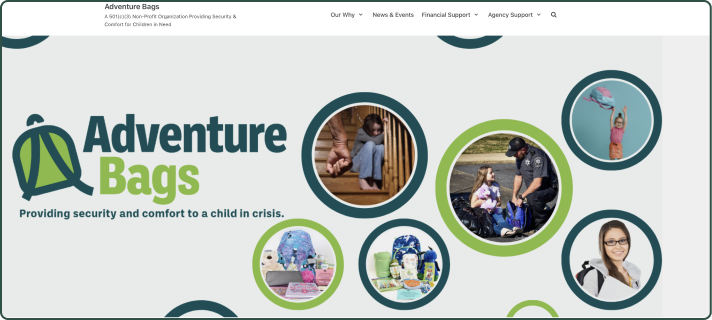
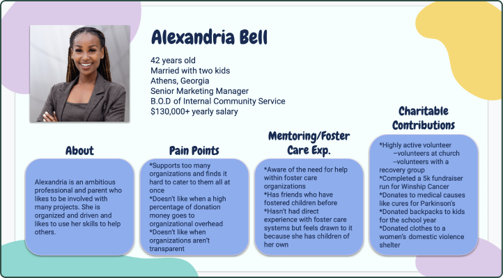

Summary: A stakeholder interview with the executive director of Adventure Bags and 1-on-1 interviews with potential volunteers or donors gave us both a sense of the organization’s priorities for a website redesign and of the elements that felt most important to individuals trying to decide whether or not to give their time or money to this organization. We conducted a heuristic analysis of the current Adventure Bags website to determine its strengths and opportunities for improvement. Finally, we conducted a competitive analysis of the websites of other local nonprofit organizations that work with foster families or by providing material resources to children in need. These comparisons helped us consider what Adventure Bags was doing well as well as opportunities for improvement as we began our redesign process.
We began with an interview with the executive director of Adventure Bags to find out her frustrations with the current website and her hopes for a redesign. She wanted to emphasize the significance of the organizations’ mission to help children in foster care while also encouraging more people to volunteer their time to pack bags. We also conducted 1-on-1 interviews with individuals to determine what motivates them to donate time or money to nonprofit causes, and to assess how much they knew about the foster care system in Georgia.

Our heuristic analysis revealed that while the current website employed good use of white space, it was hard to find specific pieces of information. Furthermore, there was no way for a potential volunteer to find out how to contribute. Styles were mixed and contributed to a jangly feeling.

Based on our research, we developed a user persona for a potential Adventure Bags donor and volunteer. Alexandria Bell is an active professional and mother of two who derives satisfaction and a sense of purpose from being highly involved in volunteering her time and donating goods and funds to organizations she cares about. She tends to spread herself a bit thinly, but welcomes opportunities for quick volunteer events that she can do with friends or co-workers. This user persona helped to guide our thinking about design elements that would make supporting Adventure Bags both easy to do and rewarding.
